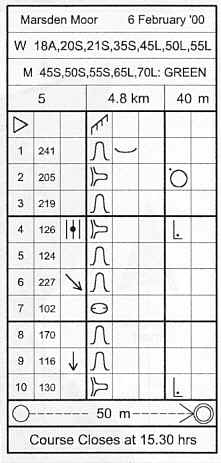

Control Descriptions
In addition to receiving a map depicting the terrain and course, each competitor also receives a list of Control Descriptions. For each control on the competitor's course there is an associated description. This description defines the numeric or alphanumeric code to be found on the side of the control and the feature on which the control is located.
There are two types of control descriptions, written and pictorial. These are explained below.
Historically, written descriptions were used for all courses. In recent years written descriptions have only been provided for young children or at local colour coded events. For all other competitors and events pictorial descriptions are used. Pictorial descriptions were introduced so that international competitions could provide descriptions in a format that was understood by all competitors. This saves having to translate written descriptions into several languages. However, if you're new to the sport it's worth reading the section on written descriptions as many of the concepts are the same for pictorial descriptions.
Written Descriptions to the top ↑
|
The information provided starts with the course, in this example a Yellow Colour Coded course. The course is 1.5km in length with 50m of climb. The start is situated 'on' a wall. The details for the first control indicate that the code on the control is number '128' and the feature is a 'Wall junction, south side'. The code is important. There may be other controls in the vicinity of the one you're seeking with similar codes, e.g. 126 or 127. If you don't punch the right one then you risk disqualification. The description itself informs you that the control is on the south side of the wall junction. Thus, if you approach from the north you know to go around to the other side of the wall junction in order to find the control. When you've successfully punched all eight controls you are instructed to 'Follow tapes 150m to finish'. The statement that 'Courses Close 14:30' hopefully won't affect you. Normally organisers allow between two to two and a half hours after the last start before courses close. This means that the organisers will start removing controls from 14:30. The final instruction is very important, 'You must report to the finish'. If you fail to do this then the organisers will think that you're still out in the terrain and begin a search. Aside from the inconvenience if you're not, this may also involve external organisations like the Mountain Rescue. Even if you retire and do not complete the course, you must comply with this instruction. |
Pictorial Descriptions to the top ↑
|
For all but Colour Coded events, Pictorial descriptions are normally distributed with final event details. This is because some competitors like to fasten them to their wrist in plastic holders, especially made for the purpose. The example comes from a Badge Event in February. At this particular event Course 5 was 4.8km in length with 40m of climb. A number of different age classes competed over the same course. The information for each control, is divided into eight columns. From left to right the purpose of these columns is as follows:
A booklet depicting all the possible options (and map symbols) may be purchased from the British Orienteering Federation, see Bibliography. Sheets containing just the pictorial descriptions are available from orienteering traders at events. Therefore, looking at the example, the start was situated 'on' a fence. The first control had a code of 241 and was a shallow re-entrant. The second control had a code of 205 and was on the northwestern side of a spur. The third control had a code of 219 and was another re-entrant. The fourth control had a code of 126 and was at the foot of the middle spur . . . and so on. See if you can work out the remaining descriptions? The only clue is that the seventh control is a depression. When you've successfully punched all ten controls you 'Follow tapes 50m to finish'. The 'Course Closes at 15:30'. |
 |